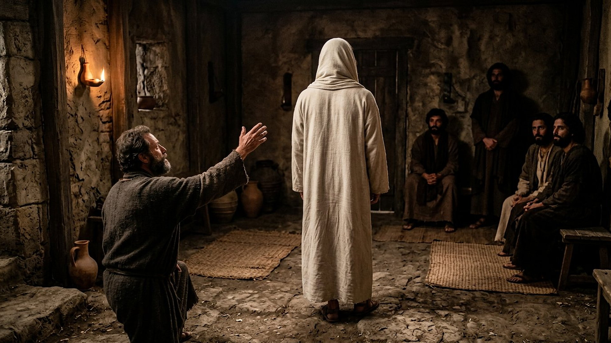
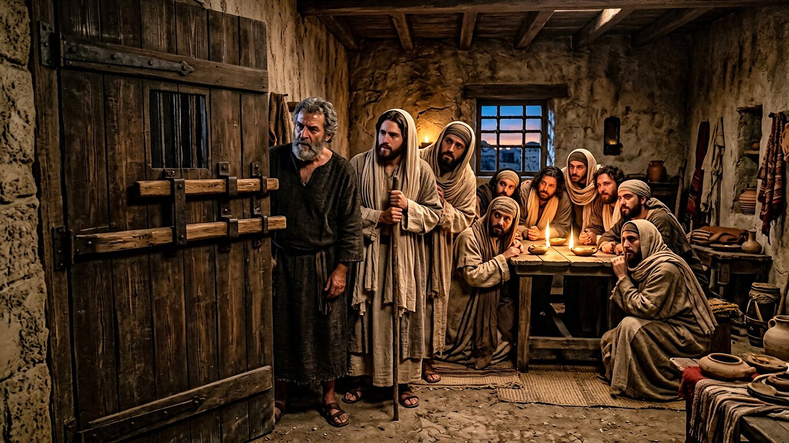
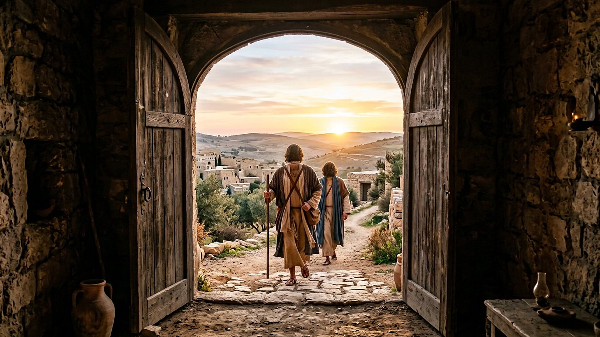

Salle 57 — Jean 20 ACCOMPLIE
Thomas : le doute qui demande à voir
« Parce que tu m’as vu, tu as cru. Heureux ceux qui n’ont pas vu, et qui ont cru ! » — Jean 20:29 (d’après Segond 1910)
Reconstitution numérique — la main tendue sans toucher : la figure debout est vue de dos, visage caché, sans auréole et sans plaie montrée.
Absent le premier soir, présent huit jours plus tard
Le soir du dimanche de la résurrection, les disciples sont réunis à Jérusalem, portes verrouillées « par crainte des Juifs », lorsque Jésus apparaît au milieu d’eux, leur montre ses mains et son côté, puis leur dit : « la paix soit avec vous. » Thomas (en grec, translittération : Thōmâs ; en araméen, « le jumeau », rendu en grec par Didyme, translittération : Dídymos) est absent. Lorsqu’on lui raconte la visite, il refuse de s’en tenir au témoignage des autres : « si je ne vois dans ses mains la marque des clous, si je ne mets mon doigt dans la marque des clous, et si je ne mets ma main dans son côté, je ne croirai point. » Huit jours plus tard, portes encore fermées, Jésus revient, s’adresse directement à lui et l’invite à avancer son doigt. Thomas ne raconte pas un examen : il répond par la confession la plus haute de l’évangile de Jean : « mon Seigneur et mon Dieu ! » (Jean 20:19-28, résumé sobre et citations d’après Segond 1910).
Dans la lecture retenue par ce musée, cette salle défend le doute formulé honnêtement : Thomas ne demande ni un spectacle ni une faveur unique, mais la même évidence que les autres disciples ont déjà reçue avant lui — voir le ressuscité et reconnaître les marques de son exécution. La réponse ne le rabroue pas pour avoir demandé ; elle élargit la scène vers tous ceux qui, ensuite, croiront sur le témoignage écrit. C’est exactement la position du visiteur devant ce musée : ni témoin oculaire, ni sommé de croire sans examiner.
Le récit en cinq temps
Des portes verrouillées à la confession, avancez d’une station à l’autre.

Le banc des preuves : un évangile au nom de Thomas, un débat ancien
DÉBATTU
L’Évangile selon Thomas de Nag Hammadi : un nom célèbre, un autre livre (EV-66)
En 1945, près de Nag Hammadi (en arabe, translittération : Najʿ Ḥammādī, en Égypte), des paysans ont découvert des codex coptes dont l’un — le codex II, conservé au musée copte du Musée du Caire (en anglais : Coptic Museum) — contient un recueil de paroles attribuées à Jésus, présenté sous le nom de Thomas. Vérifié : le nom de l’apôtre a très tôt porté des écrits de circulation parallèle. Débattu : la date de composition de ce recueil de paroles, ses sources et son rapport aux évangiles canoniques ; il ne contient aucun récit de résurrection ni la scène de Jean 20. La salle le signale pour éviter une confusion fréquente : cet « évangile de Thomas » n’est pas la source de l’épisode du doute.
DÉBATTU
« Ne sois pas incrédule, mais crois » : ce que Thomas a réellement touché
Le texte de Jean rapporte l’invitation — « avance ici ton doigt, et regarde mes mains ; avance aussi ta main, et mets-la dans mon côté » — puis la confession immédiate de Thomas, sans préciser qu’il a effectivement touché. Les spécialistes débattent de ce silence et, plus largement, de la façon dont les récits d’apparition articulent corps relevé et reconnaissance par les marques de la mort. La salle montre la main tendue et suspendue, sans représenter de plaie et sans trancher ce que le texte laisse ouvert.
LECTURE PROPHÉTIQUE
« Heureux ceux qui n’ont pas vu » : la salle elle-même concernée
La dernière parole de la scène déborde le Ier siècle : « parce que tu m’as vu, tu as cru ; heureux ceux qui n’ont pas vu, et qui ont cru. » Aussitôt après, l’évangile déclare son propre but : « ces choses ont été écrites afin que vous croyiez que Jésus est le Christ, le Fils de Dieu » (Jean 20:30-31, d’après Segond 1910). Dans la lecture du musée, le témoignage écrit — examiné, comparé, débattu dans les salles des preuves — est présenté comme le chemin normal des générations suivantes, non comme une foi de second ordre.
Quatre clés pour bien lire le doute de Thomas
1. Thomas demande ce que les autres ont déjà reçu
Le dimanche précédent, les dix disciples présents ont vu les mains et le côté de Jésus avant de se réjouir (20:20). La condition de Thomas — voir la marque des clous et toucher — ne réclame donc pas un privilège supérieur : elle demande la parité du témoignage. Le récit ne le présente ni comme un scientifique moderne avant la lettre ni comme un traître à la foi, mais comme le retardataire d’une semaine, traité avec les mêmes égards.
2. Le même Thomas avait accepté de mourir
Le surnom de « Thomas l’incrédule » écrase le personnage : c’est lui qui, avant la résurrection de Lazare, avait dit aux autres disciples « allons aussi, afin de mourir avec lui » (Jean 11:16), et lui qui, à la dernière Cène, avait posé la question — « Seigneur, nous ne savons où tu vas ; comment pouvons-nous en savoir le chemin ? » — à laquelle répond le célèbre « je suis le chemin » (Jean 14:5-6). Ses questions sont des demandes de précision, jamais des fuites.
3. Une confession qui répond à la première page
« Mon Seigneur et mon Dieu » est la confession la plus explicite prêtée à un disciple dans l’évangile de Jean ; elle répond à son ouverture — « et la Parole était Dieu » (Jean 1:1, d’après Segond 1910) — comme une boucle qui se ferme. Dans la lecture du musée, la scène est donc construite comme le sommet du livre : celui qui exigeait de voir prononce, en voyant, la phrase pour laquelle, selon Jean 20:31, tout l’évangile a été écrit.
4. La tradition de l’Inde, présentée comme tradition
Une tradition ancienne, attestée notamment par les Actes de Thomas (texte apocryphe en syriaque, translittération : le titre est rendu « Actes de Judas Thomas »), envoie l’apôtre évangéliser jusqu’en Inde, où des communautés chrétiennes anciennes portent son nom. Les historiens débattent de ce que ces traditions conservent du Ier siècle. La salle la mentionne comme tradition vénérable et débattue — non comme un fait d’archives —, à l’image du sort réservé ici à toutes les traditions de localisation.
Prescience n’est pas fatalité — une semaine pour changer d’avis
Thomas n’était lié par aucune annonce : on lui rapporte un fait, il refuse, il pose ses conditions — puis, devant l’évidence, il change d’avis en une phrase. Sa semaine de refus n’était écrite nulle part ; elle est devenue, par la réponse qu’elle a reçue, la scène la plus célèbre du doute examiné sans mépris.

Salle 39 : le matin de Pâque dont cette semaine est la suite · Salle 55 : Pierre, l’autre relevé de la même semaine · Salle 45 : les mêmes hommes, portes ouvertes sur la foule
Écouter la salle
Transcription de la narration
Bienvenue dans cette nouvelle salle. Vous verrez d’abord une pièce ancienne aux portes bien fermées, éclairée par des lampes, puis une main tendue avec hésitation, et enfin une grande porte ouverte sur la lumière du matin. Bonne visite à toutes et à tous. La visite avance en cinq étapes courtes. Prenez le temps d’observer chaque image et de lire les panneaux : ils présentent une semaine d’attente, un vieux recueil retrouvé en Égypte, et les questions que les spécialistes débattent encore. Merci de votre attention.